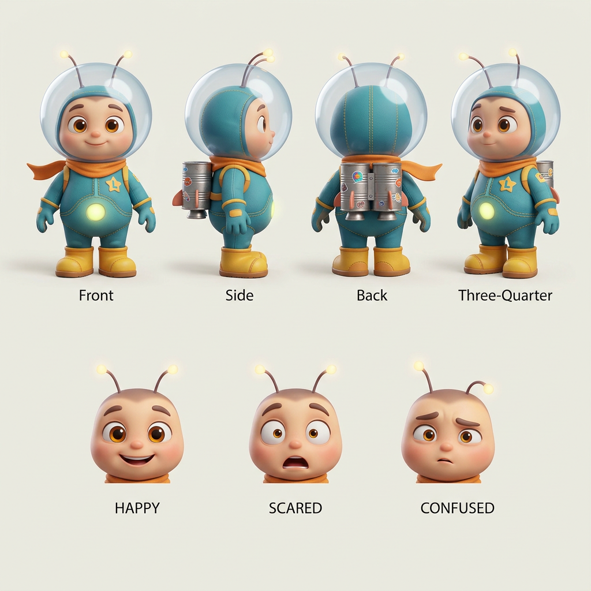

Playwright + Cucumber
End-to-End Automation Framework
BDD scenarios, reusable page objects, evidence capture, trace review and stable selectors for business-critical web journeys.
Read case studyQA Automation Engineer in Braga, Portugal
I turn product risk into clear release signal: Playwright, Cypress, Selenium, TypeScript, Java, Python, Rest Assured, Postman, SQL, Cucumber/BDD, Jira, Xray, Allure and evidence-first QA.
Manual tester at the roots, automation-minded in the daily work, and curious enough to bring AI into both quality practice and cinematic short-form creation.
Selected public-safe work
Public-safe scenes from the work I do: test design, automation, API validation, bug investigation, evidence writing and practical delivery support. No private systems, no company secrets, only transferable QA craft.
BDD scenarios, reusable page objects, evidence capture, trace review and stable selectors for business-critical web journeys.
Read case studyPublic-demo contract checks for status codes, response shape, latency budget, business rules and SQL-backed validation notes.
View samplePublic manual test scenarios, bug report examples, exploratory notes, expected versus actual analysis and release-risk language.
Open evidence packOriginal child-friendly character work, short-form cinematic motion, prompt direction, timing, consistency checks and visual polish.
Explore notesHow I think about quality
The goal is not simply more tests. The goal is cleaner feedback: fast enough for developers, deep enough for product confidence and readable enough for release decisions.
Requirements, edge cases, risk, acceptance criteria and testability.
Stable BDD flows, API checks, SQL validation notes and focused regression layers.
Evidence, reports, screenshots, traces, response checks and clear failure analysis.
Refactor suites, remove noise and document repeatable patterns.
Manual testing with public evidence
Manual QA still matters. I document expected behavior, actual behavior, environment, impact, reproduction path, attachments, root-cause hints and retest notes so a defect becomes easier to understand, prioritize and fix.
Given/when/then coverage for a fictional storefront journey with clear release value.
Severity, priority, steps, expected result, actual result and retest outcome.
Business-critical paths, integrations, data validation and historical failure zones.
AI motion and creative direction
I also create AI-assisted animation: original characters, short cinematic scenes, prompt iteration, consistency checks, timing, lighting and final presentation polish.

Character mood, camera beat, lighting cue, motion intent and export checks, treated with the same iteration discipline I use in QA.
Read the AI motion notesExperience arc
Public links
Open to QA automation, API testing, manual testing, BDD workflows, test strategy, evidence/reporting and AI-assisted quality practices.